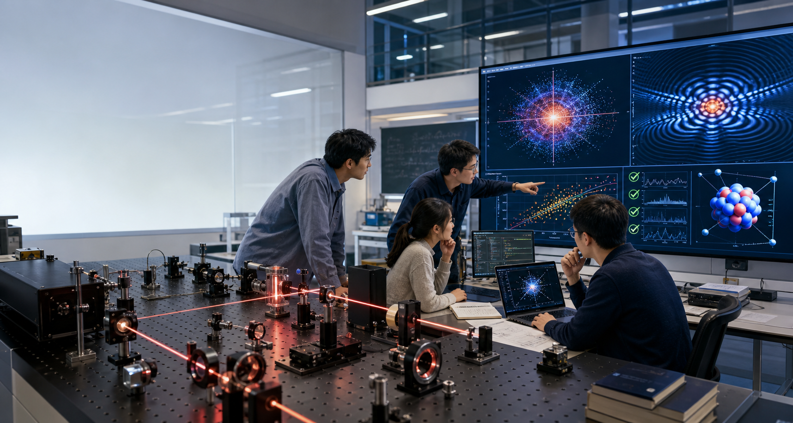
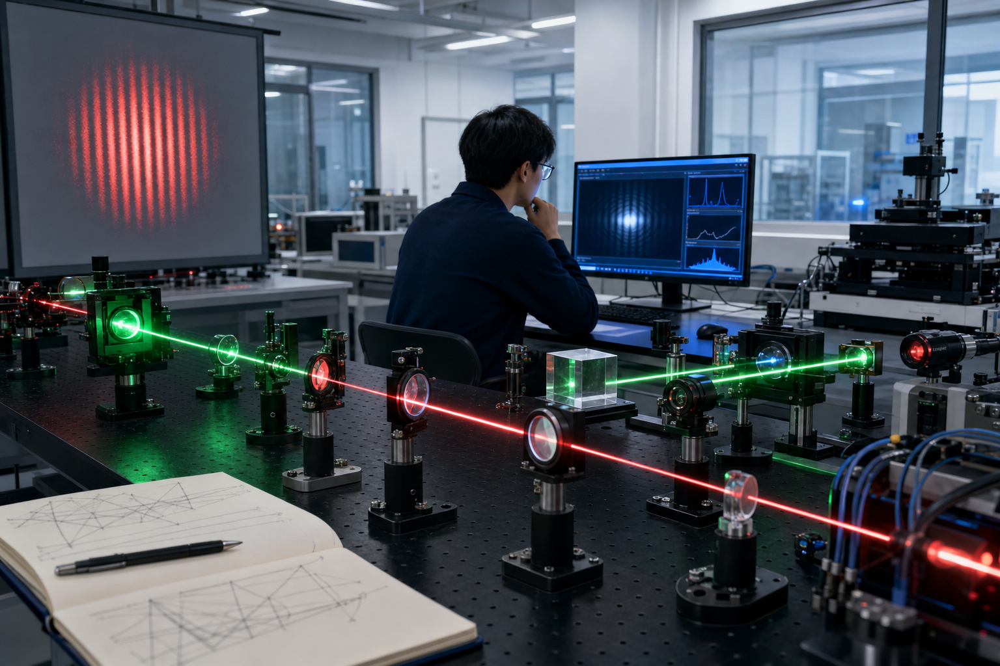

01
现实基础：学生已经在使用
与其把智能工具视为课外变量，不如在课程中明确使用边界。物理学院应把量纲、极限、守恒律、基准算例、误差和复现作为统一要求。
建设依据
学生已经在课外使用大模型辅助阅读、编程、作图和写作。学院层面的课程建设可以把这种自发使用转化为有规范、有边界、有评价标准的科研训练。
与其把智能工具视为课外变量，不如在课程中明确使用边界。物理学院应把量纲、极限、守恒律、基准算例、误差和复现作为统一要求。
传统数值课强调算法和方程，通用工具课强调软件操作。本课程补上中间层：如何把物理问题转化为可执行任务，并对计算结果作出可信判断。
核反应、散射、光学实验和傅里叶光学都天然涉及模型、数据、拟合和误差。以这些内容组织课程，可以体现同济物理学院的学科特点。

课程定位
教学方案
按同济大学 45 分钟一个学时计算，本课程每次课 2 学时，共 90 分钟。每次课按“概念讲解、现场示范、学生实验、验证复盘”组织，并留下可检查的代码、图像、日志或验证材料。
明确课程边界，训练学生把模糊物理想法转化为有假设、有方程、有验证标准的任务。
围绕代码、数据、图像、推导和模拟，建立每个项目必须具备的验证链条。
围绕反问题、分工协作、版本管理和论文式表达，建立完整的项目工作流。
通过项目冲刺、同行评阅和最终答辩，检查学生是否能够解释模型、代码、数据和验证结果。
师资分工
一条主线偏理论计算和反问题，一条主线偏光学实验、成像和数据分析。共同目标不是堆叠知识点，而是让学生在不同物理场景中反复练习同一套研究规范。
适合展示模型构建、数值求解、参数拟合、不确定性量化和基准比较。可由核理论方向教师主讲，承担理论计算与反问题训练。

适合展示从实验图像和光强数据出发的分析流程。光学方向教师可负责干涉、衍射、傅里叶光学、光束传播和实验误差。
教学组织
建议采用小组制、过程性评价和统一项目模板。教师不需要每节课讲满，而是用现场示范和实验室式指导建立学生的操作标准。
质量保障
课程制度必须明确：工具输出不能直接成为结论，所有关键结果都要经过物理审查、基准比较和可复现检查。
应对办法：评分重心放在验证、日志、错误修正和答辩，而不是代码量。学生必须解释每个关键公式、参数和图像。
应对办法：所有参考文献必须提交 DOI、arXiv 或出版社页面。无法核验来源的引用不计入有效文献。
应对办法：每个项目至少包含一个解析极限、一个基准算例、一次收敛测试和一张合理性检查图。
应对办法：最终报告必须包含智能工具使用说明，列明工具、用途、人工核查和最终责任。
考核方式
实施建议
课程定位为高年级本科生和研究生共用的科研方法课。32 学时按 16 次课安排，每次 2 学时，共 90 分钟。第一轮以小班试点为宜，人数控制在 25 到 40 人，方便教师检查交互日志、代码仓库和验证报告。成熟后可扩展为学院智能科研训练平台。
对外可参考 Rice University “Vibe Coding for Research” 等课程的科研计算取向；对内应突出同济物理学院自己的核反应、散射、光学与成像案例。